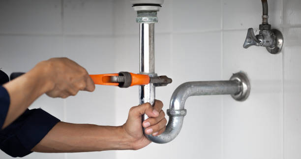

How to Enjoy Peace of Mind by Choosing the Best-Rated Plumbing Contractors in Frisco
Posted by on 2024-06-07
Enjoying peace of mind is a state we all strive to attain, particularly when it comes to maintaining our homes. One aspect of home care that often causes stress is plumbing. A leaky faucet or a burst pipe can quickly turn into a homeowner’s nightmare if not handled properly. Therefore, choosing the best-rated plumbing contractors in Frisco is crucial for ensuring that your plumbing issues are resolved efficiently and effectively, allowing you to enjoy the tranquility of a well-maintained home.
When searching for top-notch plumbing services in Frisco, it's important to start with thorough research. The internet can be an invaluable resource in this endeavor, offering reviews and ratings on various platforms such as Yelp, Google Reviews, Angie's List, or HomeAdvisor. These platforms provide insights from other customers’ experiences with different plumbing companies which can guide you toward making an informed choice.
One should also consider seeking recommendations from friends and family who have had positive experiences with plumbers in the area. Personal endorsements often come with anecdotes about reliability, professionalism, and quality of work - factors that are critical when looking for someone to handle something as essential as your home’s plumbing system.
Once you have compiled a list of potential candidates based on their ratings and recommendations, delve deeper by examining each contractor's credentials. Ensure they are licensed and insured; this provides protection against possible damage and guarantees that they have met industry standards for service and knowledge.
It's also wise to evaluate their level of experience specifically within Frisco. Local contractors will likely be familiar with municipal codes and the typical plumbing challenges faced in the area due to climate or local construction practices. Additionally, working with local experts means they can respond more swiftly in emergency situations—a major plus when water-related disasters strike without warning.
When contacting different contractors, take note of their customer service approach. Are they courteous? Do they take time to address your concerns? Professionalism over the phone often reflects the type of service you will receive during their visit.
Furthermore, transparency around pricing matters significantly when selecting a plumber. High-rated contractors should provide clear estimates before commencing any job so there won't be any unexpected charges after the work is completed. They should also guarantee their workmanship for added assurance regarding quality control.
Finally yet importantly is scheduling flexibility—reputable plumbers understand that your time is valuable and will strive to accommodate your timetable whenever possible while still providing prompt service for urgent issues.
In conclusion, taking these steps towards choosing highly rated plumbing contractors not only facilitates high-quality repairs but also contributes immensely towards enjoying peace of mind as a homeowner in Frisco:
1. Conduct thorough research through online reviews.
2. Seek personal recommendations.
3. Check credentials like licensing and insurance.
4. Prioritize local experience.
5: Evaluate customer service.
6: Insist on upfront pricing.
7: Look for scheduling flexibility.
By emphasizing these criteria during your selection process for a trustworthy plumber in Frisco, inevitable household setbacks like leaky pipes or clogged drains become manageable rather than overwhelming—an investment worth making for homeowners who value serenity amidst life’s everyday challenges.